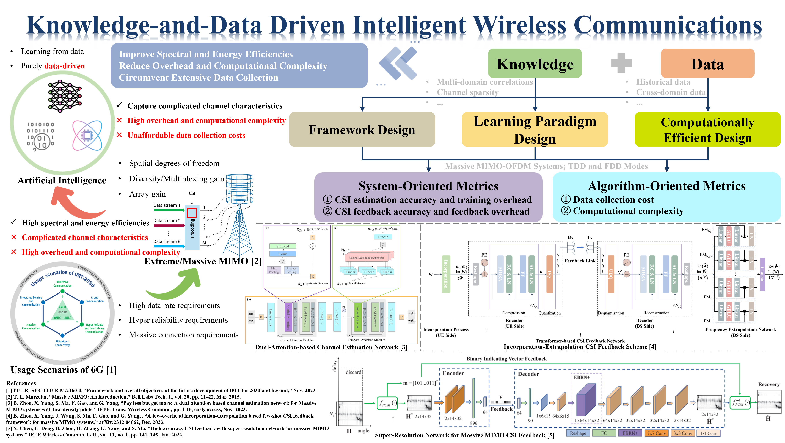
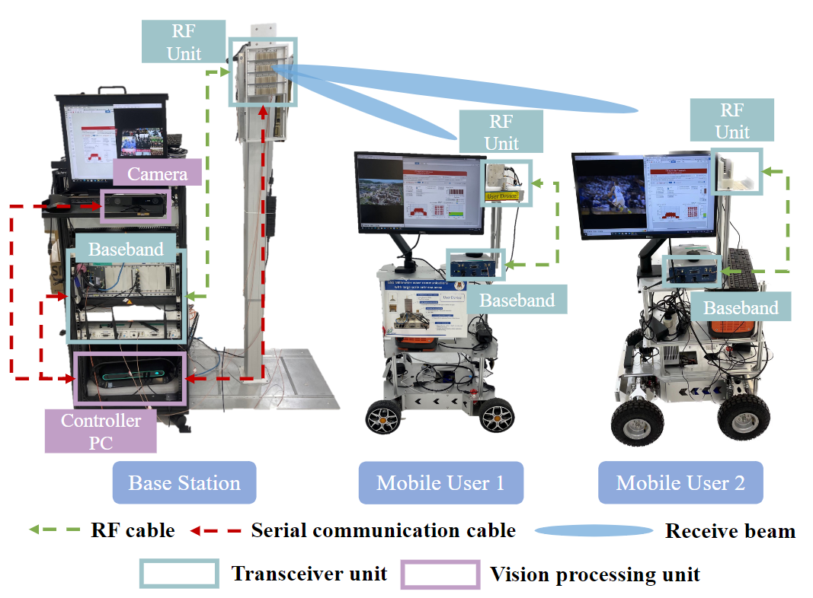
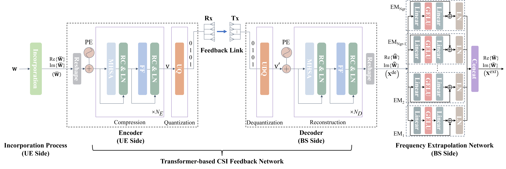
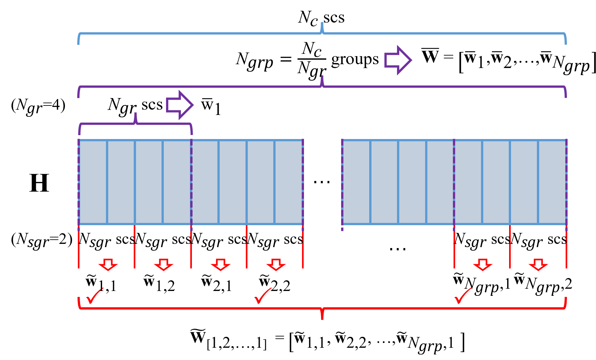
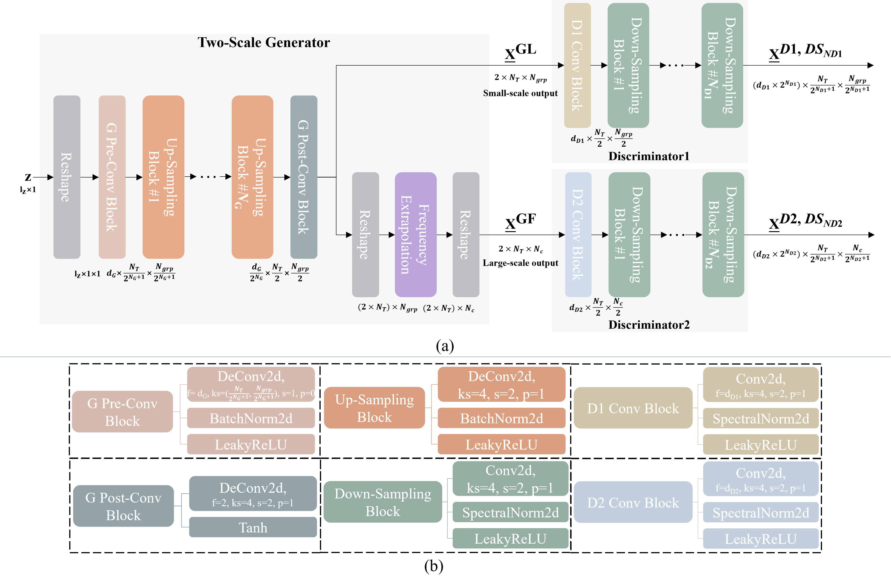
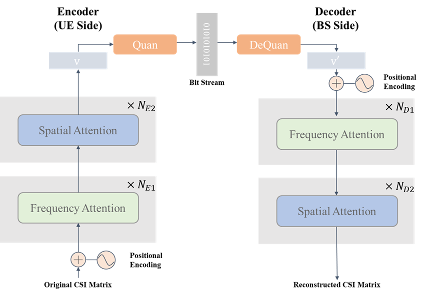
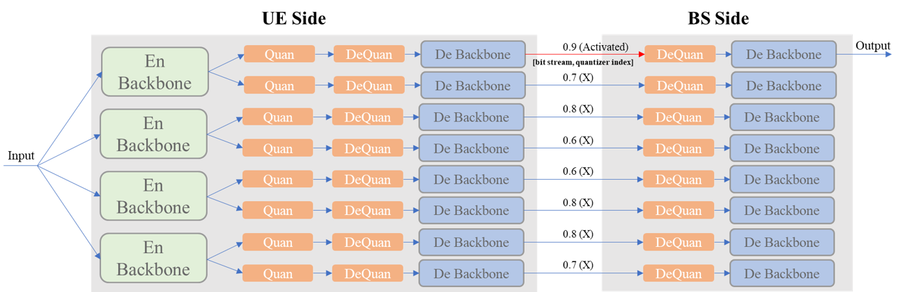
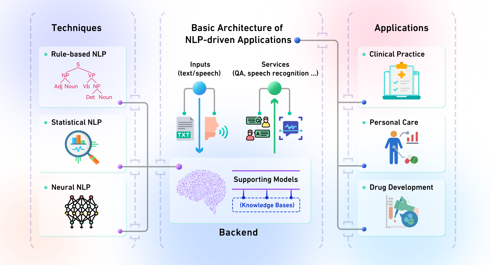

Research Interests | Research Highlights | Collaborators
Research Interests
Artificial Intelligence: Deep Learning, Generative Artificial Intelligence, Natural Language Processing
Artificial Intelligence Empowered Wireless Communications: Signal Processing, Massive MIMO
Research Highlights
Artificial Intelligence Empowered Wireless Communications
1. Knowledge-and-Data Driven Intelligent Wireless Communications

Currently, mobile communications have evolved into 5G/B5G and we are now anticipating what 6G will be like. According to [1], the usage scenarios of IMT-2030 (6G) include immersive communication, hyper reliable and low-latency communication, massive communication, ubiquitous connectivity, integrated sensing and communication, etc. These usage scenarios raise high data rate requirements, hyper reliability requirements, and massive connection requirements to current wireless communication systems. To meet these requirements, extreme/massive MIMO has been recognized as an essential technology to provide spatial degrees of freedom, diversity or multiplexing gain, and array gain, thereby improving the spectral and energy efficiencies of wireless communication systems.
However, massive MIMO also brings out complicated channel characteristics and high overhead and computational complexity, which are significantly challenging. It is fortunate that by learning from extensive data, some deep learning-based algorithms have been proposed to capture the complicated channel characteristics of massive MIMO channels and further improve the spectral and energy efficiencies of massive MIMO systems. Nonetheless, the high overhead and computational complexity of massive MIMO systems are not significantly reduced by existing deep learning-based algorithms. In addition, most existing deep learning-based algorithms are purely data-driven and basically rely on extensive collected data for learning the features of complicated wireless channels, leading to unaffordable data collection costs.
To simultaneously improve spectral and energy efficiencies, reduce overhead and computational complexity, and circumvent extensive data collection towards intelligent wireless communications, we investigate how to realize knowledge-and-data driven intelligent wireless communications, particularly for massive MIMO systems. Both domain knowledge, e.g., multi-domain correlations and channel sparsity, and data, e.g., historical data and cross-domain data, are exploited for framework design, learning paradigm design, and computationally efficient design to achieve the aforementioned goals. Some frameworks and algorithms we proposed are listed above and the interested readers are referred to the following publications:
[1] Binggui Zhou, Xi Yang, Shaodan Ma, Feifei Gao, and Guanghua Yang, “Pay less but get more: A dual-attention-based channel estimation network for massive MIMO systems with low-density pilots,” IEEE Transactions on Wireless Communications, vol. 23, no. 6, pp. 6061-6076, Jun. 2024.
[2] Binggui Zhou, Xi Yang, Jintao Wang, Shaodan Ma, Feifei Gao, and Guanghua Yang, “A low-overhead incorporation-extrapolation based few-shot CSI feedback framework for massive MIMO systems,” accepted by IEEE Transactions on Wireless Communications, Jun. 2024. Available online at https://arxiv.org/abs/2312.04062
[3] Binggui Zhou, Xi Yang, Shaodan Ma, Feifei Gao, and Guanghua Yang, “Low-overhead channel estimation via 3D extrapolation for TDD mmWave massive MIMO systems under high-mobility senarios” submitted to IEEE Transactions on Wireless Communications, Jun. 2024. Available online at https://arxiv.org/abs/2406.08887
[4] Xiaohong Chen, Changxing Deng, Binggui Zhou, Huan Zhang, Guanghua Yang, and Shaodan Ma, “High-accuracy CSI feedback with super-resolution network for massive MIMO systems,” IEEE Wireless Communication Letters., vol. 11, no. 1, pp. 141–145, Jan. 2022.
2. AI Empowered Wireless Communications Systems: Prototyping and Demo Systems
Vision-aided multi-user sensing and communications prototyping system:

Details of the prototyping system can be found in our lab pages and the following publications.
[1] Kehui Li, Binggui Zhou, Jiajia Guo, Xi Yang, Qing Xue, Feifei Gao, and Shaodan Ma, “Vision-aided Multi-user Beam Tracking for mmWave Massive MIMO System: Prototyping and Experimental Results,” accepted by IEEE Vehicular Technology Conference: VTC2024-Spring.
3. Brief Introductions to Featured Research Works
(5) Binggui Zhou, Xi Yang, Jintao Wang, Shaodan Ma, Feifei Gao, and Guanghua Yang, “A Low-Overhead Incorporation-Extrapolation based Few-Shot CSI Feedback Framework for Massive MIMO Systems,” accepted by IEEE Transactions on Wireless Communications, Jun. 2024. [Preprint]
Accurate channel state information (CSI) is essential for downlink precoding in frequency division duplexing (FDD) massive multiple-input multiple-output (MIMO) systems with orthogonal frequency-division multiplexing (OFDM). However, obtaining CSI through feedback from the user equipment (UE) becomes challenging with the increasing scale of antennas and subcarriers and leads to extremely high CSI feedback overhead. Deep learning-based methods have emerged for compressing CSI but these methods generally require substantial collected samples and thus pose practical challenges. Moreover, existing deep learning methods also suffer from dramatically growing feedback overhead owing to their focus on full-dimensional CSI feedback. To address these issues, we propose a low-overhead Incorporation-Extrapolation based Few-Shot CSI feedback Framework (IEFSF) for massive MIMO systems. An incorporation-extrapolation scheme for eigenvector-based CSI feedback is proposed to reduce the feedback overhead. Then, to alleviate the necessity of extensive collected samples and enable few-shot CSI feedback, we further propose a knowledge-driven data augmentation (KDDA) method and an artificial intelligence-generated content (AIGC) -based data augmentation method by exploiting the domain knowledge of wireless channels and by exploiting a novel generative model, respectively. Experimental results based on the DeepMIMO dataset demonstrate that the proposed IEFSF significantly reduces CSI feedback overhead by 64 times compared with existing methods while maintaining higher feedback accuracy using only several hundred collected samples.
The whole IEFSF structure:

The KDDA method (left) and the AIGC-based data augmentation method (right):


(4) Kehui Li, Binggui Zhou, Jiajia Guo, Xi Yang, Qing Xue, Feifei Gao, and Shaodan Ma, “Vision-aided Multi-user Beam Tracking for mmWave Massive MIMO System: Prototyping and Experimental Results,” accepted by IEEE Vehicular Technology Conference: VTC2024-Spring.
This paper introduces a vision-aided multi-user sensing and communications prototyping system and some experimental results based on this protopyting system. This system was presented as a demo in IEEE/CIC ICCC 2023, Dalian, China.
The prototyping system consists of a base station with massive antennas and multiple single/multi-antenna mobile users. The prototyping system is scalable and flexible by building the baseband processing modules into software-defined radios. The BS has vision perceptron capability powered by a binocular camera. By leveraging deep learning based visual object detection and multiple objects tracking algorithm, the BS is capable of fast multi-user beam tracking. Below are some figures of the protopyting system. Details of the prototyping system can be found in our lab pages.
(3) Our recent solution to CSI feedback with limited samples won the Winning Prize (ranking 9/1252 teams) of the First 6G Intelligent Wireless Communication System Competition held by the IMT-2030 (6G) Promotion Group and Guangdong OPPO Mobile Communications Corp., Ltd.
Deep learning based CSI feedback has received widespread attention from academia and industry in recent years. However, most of the existing deep learning based CSI feedback methods are purely data-driven. In addition to obtaining high-performance gains brought by data-driven, such methods also show poor generalization performance in different scenarios. Currently, to mitigate this issue, expensive data collection costs and long training time for different scenarios are inevitable, and thus poses further challenges for the implementation of such deep learning based CSI feedback methods. To address these challenges, we propose a CSI feedback method that uses only a small number of samples to obtain better generalization capabilities. Through frequency domain data augmentation and the advanced dual-attention-based CSI feedback model, the proposed CSI feedback method can achieve CSI feedback with good generalization ability in a very concise way. In addition, to mitigate quantization errors, we further propose a quantization ensembling framework which exploits several quantizers and dequantizers for ensembling. Specifically, constrained by 30-bit CSI feedback overhead and to balance the number of feedback bits, quantization error and the size of backbone networks, we use 27 bits for quantization and 3 bits as the quantizer index (which indicates that a total of 8 quantizers with different configurations can be utilized). Hybrid scalar quantization is considered, and each two quantizers share an Encoder backbone network to ensure that each Encoder backbone network has larger model scale and learning capabilities.
The dual-attention-based CSI feedback model (left) and the quantization ensembling framework (right):


(2) Binggui Zhou, Xi Yang, Shaodan Ma, Feifei Gao, and Guanghua Yang, “Pay Less But Get More: A Dual-Attention-based Channel Estimation Network for Massive MIMO Systems with Low-Density Pilots,” accepted by IEEE Transactions on Wireless Communications. (JCR Q1, IF: 10.4) [Paper] [Preprint] [Code]
To reap the promising benefits of massive MIMO systems, accurate CSI is required through channel estimation. However, due to the complicated wireless propagation environment and large-scale antenna arrays, precise channel estimation for massive MIMO systems is significantly challenging and costs an enormous training overhead. Considerable time-frequency resources are consumed to acquire sufficient accuracy of CSI, which thus severely degrades systems’ spectral and energy efficiencies. In this paper, we propose a dual-attention-based channel estimation network (DACEN) to realize accurate channel estimation via low-density pilots, by jointly learning the spatial-temporal domain features of massive MIMO channels with the temporal attention module and the spatial attention module. To further improve the estimation accuracy, we propose a parameter-instance transfer learning approach to transfer the channel knowledge learned from the high-density pilots pre-acquired during the training dataset collection period. Experimental results reveal that the proposed DACEN-based method achieves better channel estimation performance than the existing methods under various pilot-density settings and signal-to-noise ratios. Additionally, with the proposed parameter-instance transfer learning approach, the DACEN-based method achieves additional performance gain, thereby further demonstrating the effectiveness and superiority of the proposed method. Read More
The proposed DACEN (left) and the parameter-instance transfer learning approach (right):

Some numerical results:


(1) Check out Our Solution to the First 6G AI Competition held by the Guangdong OPPO Mobile Communications Corp., Ltd, which won the Silver Prize and ranked 2/727 teams.
Channel modeling is an important area of 6G pre-research. To cope with the increasingly complex wireless communication environment and make full use of data-driven/data-model-driven artificial intelligence algorithms for complex channel modeling, we propose a generative adversarial network (GAN) for channel modeling and constructing an extensive wireless channel dataset of high-quality samples using a small number of real channel samples. The proposed GAN is based on the multi-head self-attention mechanism and convolution operations. We decouple the channel generation problem into two parts: valid (meaningful) delayed path position generation and valid (meaningful) delayed path generation. Therefore, the generator contains two sub-networks. The path generation sub-network mainly exploits Transformer layers as the backbone, while the backbone of the path position generation sub-network is with a two-layer multi-layer perceptron structure. The discriminator exploits multiple convolutional downsampling modules to distinguish between generated samples and real samples.

Data Mining
[3] Yunxuan Dong†, Binggui Zhou†, Guanghua Yang, Fen Hou, Zheng Hu, and Shaodan Ma, “A Novel Model for Tourism Demand Forecasting with Spatial–Temporal Feature Enhancement and Image-Driven Method,” Neurocomputing, vol. 556, p. 126663, Nov. 2023. (JCR Q1, IF: 6) [Paper] [Preprint]
[2] Binggui Zhou, Yunxuan Dong, Guanghua Yang, Fen Hou, Zheng Hu, Suxiu Xu, and Shaodan Ma, “A Graph-Attention Based Spatial-Temporal Learning Framework for Tourism Demand Forecasting,” Knowledge-Based Systems, vol. 263, p. 110275, Mar. 2023. (JCR Q1, IF: 8.8) [Paper]
[1] Binggui Zhou, Guanghua Yang, Zheng Shi, and Shaodan Ma, “Interpretable Temporal Attention Network for COVID-19 Forecasting,” Applied Soft Computing, vol. 120, p. 108691, May 2022. (JCR Q1, IF: 8.7) [Paper]
Smart Healthcare
[1] Binggui Zhou, Guanghua Yang, Zheng Shi, and Shaodan Ma, “Natural Language Processing for Smart Healthcare,” IEEE Reviews in Biomedical Engineering, vol. 17, pp. 4-18, Jan. 2024. (JCR Q1, IF: 17.6, ESI Hot Paper) [Paper] [Preprint]
In smart healthcare, natural language processing (NLP) techniques are highly demanded to analyze and understand human language for various smart applications across various healthcare scenarios. In this work, we review existing studies that concern NLP for smart healthcare from the perspectives of technique and application. We first elaborate on different NLP approaches and the NLP pipeline for smart healthcare from the technical point of view. Then, in the context of smart healthcare applications employing NLP techniques, we introduce several representative smart healthcare scenarios. We further discuss two specific medical issues, i.e., the coronavirus disease 2019 (COVID-19) pandemic and mental health, in which NLP-driven smart healthcare plays an important role. Finally, we discuss the limitations of current works and identify the directions for future works. Read More

Collaborators
I collaborate closely with Prof. Feifei Gao (Professor, Tsinghua University), Prof. Xi Yang (Professor, East China Normal University), Prof. Zheng Shi, (Associate Professor, Jinan University), and Prof. Qing Xue, (Assistant Professor, Chongqing University of Posts and Telecommunications) on AI empowered wireless communications, with Prof. Jiawen Yuan, (Assistant Professor, Nanjing Institute of Technology) on radar sensing, and with Prof. Yunxuan Dong (Assistant Professor, Guangxi University) on data mining.
Feel free to drop me an email if you would like to collaborate with me.